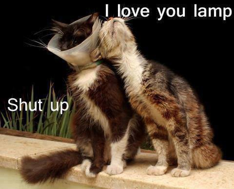

Cat Facts

Thank you for subscribing to Cat Facts!
- Unlike dogs, cats do not have a sweet tooth. Scientists believe this is due to a mutation in a key taste receptor.
- When a cat chases its prey, it keeps its head level. Dogs and humans bob their heads up and down.
- A group of cats is called a clowder.
- A cat can’t climb head first down a tree because every claw on a cat’s paw points the same way. To get down from a tree, a cat must back down.
- Cats make about 100 different sounds. Dogs make only about 10.